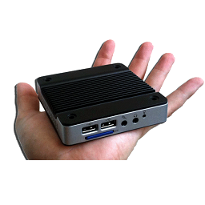
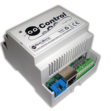
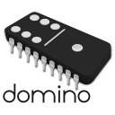

Downloads
OpenDomoOS is available for several platforms, to match your needs:
Software for other hardware:
Virtual Machines
Use VirtualBox to run your OpenDomoOS in a virtual machine if you don't have dedicated hardware for it. This is the best option for professional environments, where is common to have computers permanently on, and also the fastest if you want to test the system.
To use this file, open VirtualBox and then go to File - Import virtualized service menu, and select the downloaded file.
Raspberry PI
OpenDomoOS can run on Raspberry PI model B, and also model B+ on version 2.2 or higher. This is a very popular, low-consumption and inexpensive platform, perfect for prototyping and home automation.
To use this file, download the file and flash it on the SD card to boot the Raspberry PI. Important: {device} must be the SD device ID, not the partition, and it must have at least 2GB of capacity
# gunzip {filename}.gz
# dd if={filename}.img of=/dev/{device}ODNetwork
ODNetwork is an embedded platform running OpenDomoOS. This is very robust and reliable device, optimal for industrial automation and professional installations.
To use this file, download the file and flash it on the SD card to boot the ODNetwork. Important: {device} must be the SD device ID, not the partition, and it must have at least 2GB of capacity
# gunzip {filename}.gz
# dd if={filename}.img of=/dev/{device}ODControl
These are the last versions of the ODControl firmware:
To use this file, open VirtualBox and then go to File - Import virtualized service menu, and select the downloaded file.
DominoOSE
DominoOSE is the ODControl firmware opensource version for the Arduino Ethernet platform.
You will need the Arduino SDK to compile this file and load it into your Arduino Ethernet.